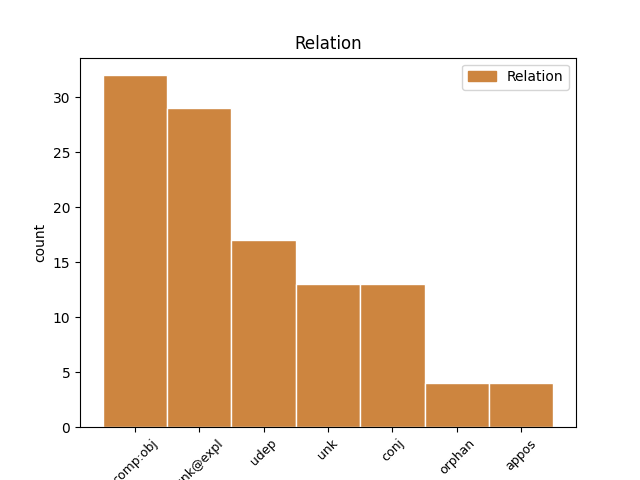
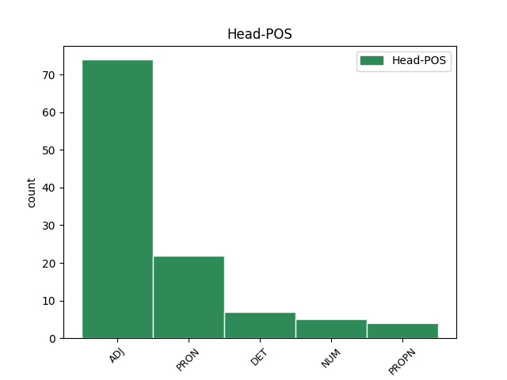
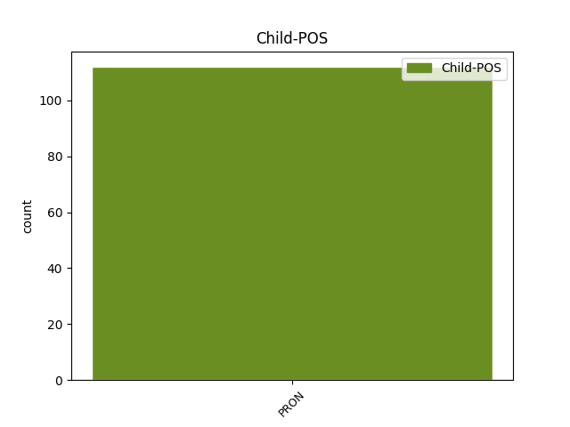

Distribution of features within this leaf



Agreement Rules sorted by frequency.
- When the dependent token is the conjunct(conj) of the head token, and the head token is PRON and the dependent token is PRON.
1 Nezůstalo _ _ _ _ 0 _ _ _
2 tam _ _ _ _ 0 _ _ _
3 nic nic PRON PW--1---------- Case=Nom|PronType=Neg 0 _ _ _
4 , _ _ _ _ 0 _ _ _
5 co _ _ _ _ 0 _ _ _
6 by _ _ _ _ 0 _ _ _
7 ho _ _ _ _ 0 _ _ _
8 lákalo _ _ _ _ 0 _ _ _
9 , _ _ _ _ 0 _ _ _
10 nic nic PRON PW--1---------- Case=Nom|PronType=Neg 3 conj _ SpaceAfter=No
11 , _ _ _ _ 0 _ _ _
12 co _ _ _ _ 0 _ _ _
13 by _ _ _ _ 0 _ _ _
14 ho _ _ _ _ 0 _ _ _
15 trápilo _ _ _ _ 0 _ _ _
16 , _ _ _ _ 0 _ _ _
17 že _ _ _ _ 0 _ _ _
18 ztrácí _ _ _ _ 0 _ _ _
19 . _ _ _ _ 0 _ _ _
1 Dvě _ _ _ _ 0 _ _ _
2 přítelkyně _ _ _ _ 0 _ _ _
3 , _ _ _ _ 0 _ _ _
4 obě _ _ _ _ 0 _ _ _
5 už _ _ _ _ 0 _ _ _
6 trochu _ _ _ _ 0 _ _ _
7 v _ _ _ _ 0 _ _ _
8 letech _ _ _ _ 0 _ _ _
9 , _ _ _ _ 0 _ _ _
10 byly _ _ _ _ 0 _ _ _
11 natolik _ _ _ _ 0 _ _ _
12 ješitné _ _ _ _ 0 _ _ _
13 , _ _ _ _ 0 _ _ _
14 že _ _ _ _ 0 _ _ _
15 jedna _ _ _ _ 0 _ _ _
16 před _ _ _ _ 0 _ _ _
17 druhou _ _ _ _ 0 _ _ _
18 tajila _ _ _ _ 0 _ _ _
19 svůj _ _ _ _ 0 _ _ _
20 zhoršující zhoršující ADJ AGIS4-----A---- Animacy=Inan|Aspect=Imp|Case=Acc|Gender=Masc|Number=Sing|Polarity=Pos|Tense=Pres|VerbForm=Part|Voice=Act 0 _ _ _
21 se se PRON P7--4---------- Case=Acc|PronType=Prs|Reflex=Yes|Variant=Short 20 unk@expl _ _
22 zrak _ _ _ _ 0 _ _ _
23 . _ _ _ _ 0 _ _ _
1 Ve _ _ _ _ 0 _ _ _
2 světě _ _ _ _ 0 _ _ _
3 Dobyvatelově _ _ _ _ 0 _ _ _
4 jediný _ _ _ _ 0 _ _ _
5 pohled _ _ _ _ 0 _ _ _
6 vážil _ _ _ _ 0 _ _ _
7 tolik tolik DET Ca--4---------- Case=Acc|NumType=Card|PronType=Dem 0 _ _ _
8 , _ _ _ _ 0 _ _ _
9 co co PRON PQ--4---------- Animacy=Inan|Case=Acc|PronType=Int,Rel 7 unk _ _
10 v _ _ _ _ 0 _ _ _
11 říši _ _ _ _ 0 _ _ _
12 Sběratelově _ _ _ _ 0 _ _ _
13 deset _ _ _ _ 0 _ _ _
14 let _ _ _ _ 0 _ _ _
15 nejpilnější _ _ _ _ 0 _ _ _
16 tělesné _ _ _ _ 0 _ _ _
17 lásky _ _ _ _ 0 _ _ _
18 . _ _ _ _ 0 _ _ _
1 Dopis _ _ _ _ 0 _ _ _
2 , _ _ _ _ 0 _ _ _
3 který _ _ _ _ 0 _ _ _
4 pošleme _ _ _ _ 0 _ _ _
5 dnes _ _ _ _ 0 _ _ _
6 někomu někdo PRON PZM-3---------- Animacy=Anim|Case=Dat|Gender=Masc|PronType=Ind 0 _ _ _
7 blízkému _ _ _ _ 0 _ _ _
8 , _ _ _ _ 0 _ _ _
9 někomu někdo PRON PZM-3---------- Animacy=Anim|Case=Dat|Gender=Masc|PronType=Ind 6 appos _ SpaceAfter=No
10 , _ _ _ _ 0 _ _ _
11 kdo _ _ _ _ 0 _ _ _
12 na _ _ _ _ 0 _ _ _
13 náš _ _ _ _ 0 _ _ _
14 dopis _ _ _ _ 0 _ _ _
15 čeká _ _ _ _ 0 _ _ _
16 . _ _ _ _ 0 _ _ _
1 " _ _ _ _ 0 _ _ _
2 Co co PRON PQ--1---------- Animacy=Inan|Case=Nom|PronType=Int,Rel 0 _ _ _
3 co _ _ _ _ 0 _ _ _
4 my já PRON PP-P1--1------- Case=Nom|Number=Plur|Person=1|PronType=Prs 2 unk _ SpaceAfter=No
5 ? _ _ _ _ 0 _ _ _
6 " _ _ _ _ 0 _ _ _
1 že _ _ _ _ 0 _ _ _
2 dojem _ _ _ _ 0 _ _ _
3 kontur _ _ _ _ 0 _ _ _
4 , _ _ _ _ 0 _ _ _
5 které _ _ _ _ 0 _ _ _
6 ji _ _ _ _ 0 _ _ _
7 vymezují _ _ _ _ 0 _ _ _
8 jako _ _ _ _ 0 _ _ _
9 individualitu _ _ _ _ 0 _ _ _
10 , _ _ _ _ 0 _ _ _
11 je _ _ _ _ 0 _ _ _
12 jen _ _ _ _ 0 _ _ _
13 klam _ _ _ _ 0 _ _ _
14 , _ _ _ _ 0 _ _ _
15 jemuž _ _ _ _ 0 _ _ _
16 podléhá _ _ _ _ 0 _ _ _
17 ten ten DET PDMS1---------- Animacy=Anim|Case=Nom|Gender=Masc|Number=Sing|PronType=Dem 0 _ _ _
18 druhý _ _ _ _ 0 _ _ _
19 , _ _ _ _ 0 _ _ _
20 ten _ _ _ _ 0 _ _ _
21 , _ _ _ _ 0 _ _ _
22 kdo _ _ _ _ 0 _ _ _
23 se _ _ _ _ 0 _ _ _
24 dívá _ _ _ _ 0 _ _ _
25 , _ _ _ _ 0 _ _ _
26 on on PRON PPMS1--3------- Animacy=Anim|Case=Nom|Gender=Masc|Number=Sing|Person=3|PronType=Prs 17 appos _ SpaceAfter=No
27 . _ _ _ _ 0 _ _ _
1 " _ _ _ _ 0 _ _ _
2 Myslím _ _ _ _ 0 _ _ _
3 , _ _ _ _ 0 _ _ _
4 " _ _ _ _ 0 _ _ _
5 prohodil _ _ _ _ 0 _ _ _
6 zadumaně _ _ _ _ 0 _ _ _
7 , _ _ _ _ 0 _ _ _
8 " _ _ _ _ 0 _ _ _
9 že _ _ _ _ 0 _ _ _
10 mě _ _ _ _ 0 _ _ _
11 nepotřebuje _ _ _ _ 0 _ _ _
12 jen _ _ _ _ 0 _ _ _
13 Valentýna Valentýna PROPN NNFS1-----A---- Case=Nom|Gender=Fem|NameType=Giv|Number=Sing|Polarity=Pos 0 _ _ _
14 , _ _ _ _ 0 _ _ _
15 ale _ _ _ _ 0 _ _ _
16 i _ _ _ _ 0 _ _ _
17 vy ty PRON PP-P1--2------- Case=Nom|Number=Plur|Person=2|PronType=Prs 13 conj _ _
18 oba _ _ _ _ 0 _ _ _
19 . _ _ _ _ 0 _ _ _
1 " _ _ _ _ 0 _ _ _
2 První první ADJ CrFS1---------- Case=Nom|Gender=Fem|Number=Sing|NumType=Ord 0 _ _ _
3 já já PRON PP-S1--1------- Case=Nom|Number=Sing|Person=1|PronType=Prs 2 unk _ SpaceAfter=No
4 . _ _ _ _ 0 _ _ _
1 " _ _ _ _ 0 _ _ _
2 Jen _ _ _ _ 0 _ _ _
3 já _ _ _ _ 0 _ _ _
4 , _ _ _ _ 0 _ _ _
5 Simona Simona PROPN NNFS1-----A---- Case=Nom|Gender=Fem|NameType=Giv|Number=Sing|Polarity=Pos 0 _ _ _
6 a _ _ _ _ 0 _ _ _
7 ty ty PRON PP-S1--2------- Case=Nom|Number=Sing|Person=2|PronType=Prs 5 orphan _ _
8 a _ _ _ _ 0 _ _ _
9 máma _ _ _ _ 0 _ _ _
10 . _ _ _ _ 0 _ _ _
1 " _ _ _ _ 0 _ _ _
2 Pro _ _ _ _ 0 _ _ _
3 beduína _ _ _ _ 0 _ _ _
4 znamená _ _ _ _ 0 _ _ _
5 ta _ _ _ _ 0 _ _ _
6 voda _ _ _ _ 0 _ _ _
7 všechno _ _ _ _ 0 _ _ _
8 , _ _ _ _ 0 _ _ _
9 pro _ _ _ _ 0 _ _ _
10 nás já PRON PP-P4--1------- Case=Acc|Number=Plur|Person=1|PronType=Prs 0 _ _ _
11 nic nic PRON PW--4---------- Case=Acc|PronType=Neg 10 orphan _ SpaceAfter=No
12 . _ _ _ _ 0 _ _ _
Disagree Examples:
1 " _ _ _ _ 0 _ _ _
2 Ty _ _ _ _ 0 _ _ _
3 jsi _ _ _ _ 0 _ _ _
4 říkala _ _ _ _ 0 _ _ _
5 o _ _ _ _ 0 _ _ _
6 té _ _ _ _ 0 _ _ _
7 paní _ _ _ _ 0 _ _ _
8 , _ _ _ _ 0 _ _ _
9 že _ _ _ _ 0 _ _ _
10 je _ _ _ _ 0 _ _ _
11 kráva _ _ _ _ 0 _ _ _
12 , _ _ _ _ 0 _ _ _
13 když _ _ _ _ 0 _ _ _
14 nechtěla _ _ _ _ 0 _ _ _
15 to ten DET PDNS4---------- Case=Acc|Gender=Neut|Number=Sing|PronType=Dem 0 _ _ _
16 , _ _ _ _ 0 _ _ _
17 co _ _ _ _ 0 _ _ _
18 ty ty PRON PP-S1--2------- Case=Nom|Number=Sing|Person=2|PronType=Prs 15 unk _ SpaceAfter=No
19 . _ _ _ _ 0 _ _ _
20 . _ _ _ _ 0 _ _ _
21 . _ _ _ _ 0 _ _ _
22 " _ _ _ _ 0 _ _ _
1 Uměli _ _ _ _ 0 _ _ _
2 jsme _ _ _ _ 0 _ _ _
3 si _ _ _ _ 0 _ _ _
4 představit _ _ _ _ 0 _ _ _
5 , _ _ _ _ 0 _ _ _
6 co _ _ _ _ 0 _ _ _
7 by _ _ _ _ 0 _ _ _
8 to _ _ _ _ 0 _ _ _
9 bylo _ _ _ _ 0 _ _ _
10 , _ _ _ _ 0 _ _ _
11 když _ _ _ _ 0 _ _ _
12 bychom _ _ _ _ 0 _ _ _
13 my _ _ _ _ 0 _ _ _
14 byli _ _ _ _ 0 _ _ _
15 v _ _ _ _ 0 _ _ _
16 nějakém _ _ _ _ 0 _ _ _
17 cizím _ _ _ _ 0 _ _ _
18 městě _ _ _ _ 0 _ _ _
19 , _ _ _ _ 0 _ _ _
20 beze _ _ _ _ 0 _ _ _
21 zpráv _ _ _ _ 0 _ _ _
22 o _ _ _ _ 0 _ _ _
23 rodině _ _ _ _ 0 _ _ _
24 , _ _ _ _ 0 _ _ _
25 v _ _ _ _ 0 _ _ _
26 obavách _ _ _ _ 0 _ _ _
27 z _ _ _ _ 0 _ _ _
28 blížícího blížící ADJ AGNS2-----A---- Aspect=Imp|Case=Gen|Gender=Neut|Number=Sing|Polarity=Pos|Tense=Pres|VerbForm=Part|Voice=Act 0 _ _ _
29 se se PRON P7--4---------- Case=Acc|PronType=Prs|Reflex=Yes|Variant=Short 28 unk@expl _ _
30 nebezpečí _ _ _ _ 0 _ _ _
31 , _ _ _ _ 0 _ _ _
32 a _ _ _ _ 0 _ _ _
33 čekali _ _ _ _ 0 _ _ _
34 , _ _ _ _ 0 _ _ _
35 co _ _ _ _ 0 _ _ _
36 se _ _ _ _ 0 _ _ _
37 s _ _ _ _ 0 _ _ _
38 námi _ _ _ _ 0 _ _ _
39 stane _ _ _ _ 0 _ _ _
40 . _ _ _ _ 0 _ _ _
1 Pokoj _ _ _ _ 0 _ _ _
2 planul _ _ _ _ 0 _ _ _
3 , _ _ _ _ 0 _ _ _
4 střepy _ _ _ _ 0 _ _ _
5 , _ _ _ _ 0 _ _ _
6 jimiž jenž PRON PJIP7---------- Animacy=Inan|Case=Ins|Gender=Masc|Number=Plur|PrepCase=Npr|PronType=Rel 8 comp:obj _ _
7 byl _ _ _ _ 0 _ _ _
8 posetý posetý ADJ AAIS1----1A---- Animacy=Inan|Case=Nom|Degree=Pos|Gender=Masc|Number=Sing|Polarity=Pos 0 _ _ _
9 , _ _ _ _ 0 _ _ _
10 odrážely _ _ _ _ 0 _ _ _
11 ohnivé _ _ _ _ 0 _ _ _
12 světlo _ _ _ _ 0 _ _ _
13 a _ _ _ _ 0 _ _ _
14 vypadalo _ _ _ _ 0 _ _ _
15 to _ _ _ _ 0 _ _ _
16 , _ _ _ _ 0 _ _ _
17 jako _ _ _ _ 0 _ _ _
18 by _ _ _ _ 0 _ _ _
19 hořel _ _ _ _ 0 _ _ _
20 . _ _ _ _ 0 _ _ _
1 Snila _ _ _ _ 0 _ _ _
2 jsem _ _ _ _ 0 _ _ _
3 o _ _ _ _ 0 _ _ _
4 tom _ _ _ _ 0 _ _ _
5 , _ _ _ _ 0 _ _ _
6 že _ _ _ _ 0 _ _ _
7 se _ _ _ _ 0 _ _ _
8 spolužák _ _ _ _ 0 _ _ _
9 do _ _ _ _ 0 _ _ _
10 mně _ _ _ _ 0 _ _ _
11 zamiluje _ _ _ _ 0 _ _ _
12 , _ _ _ _ 0 _ _ _
13 a _ _ _ _ 0 _ _ _
14 bylo _ _ _ _ 0 _ _ _
15 mi já PRON PH-S3--1------- Case=Dat|Number=Sing|Person=1|PronType=Prs|Variant=Short 16 comp:obj _ _
16 jasné jasný ADJ AANS1----1A---- Case=Nom|Degree=Pos|Gender=Neut|Number=Sing|Polarity=Pos 0 _ _ _
17 , _ _ _ _ 0 _ _ _
18 že _ _ _ _ 0 _ _ _
19 dívku _ _ _ _ 0 _ _ _
20 s _ _ _ _ 0 _ _ _
21 nemožným _ _ _ _ 0 _ _ _
22 límečkem _ _ _ _ 0 _ _ _
23 nikdo _ _ _ _ 0 _ _ _
24 prostě _ _ _ _ 0 _ _ _
25 milovat _ _ _ _ 0 _ _ _
26 nemůže _ _ _ _ 0 _ _ _
27 . _ _ _ _ 0 _ _ _
1 Dívám _ _ _ _ 0 _ _ _
2 se _ _ _ _ 0 _ _ _
3 na _ _ _ _ 0 _ _ _
4 dceru _ _ _ _ 0 _ _ _
5 , _ _ _ _ 0 _ _ _
6 která _ _ _ _ 0 _ _ _
7 mi _ _ _ _ 0 _ _ _
8 vykládá _ _ _ _ 0 _ _ _
9 radostným _ _ _ _ 0 _ _ _
10 hláskem _ _ _ _ 0 _ _ _
11 , _ _ _ _ 0 _ _ _
12 co _ _ _ _ 0 _ _ _
13 zase _ _ _ _ 0 _ _ _
14 Samuel Samuel PROPN NNMS1-----A---- Animacy=Anim|Case=Nom|Gender=Masc|NameType=Giv|Number=Sing|Polarity=Pos 0 _ _ _
15 a _ _ _ _ 0 _ _ _
16 co co PRON PQ--4---------- Animacy=Inan|Case=Acc|PronType=Int,Rel 14 conj _ _
17 Andrejka _ _ _ _ 0 _ _ _
18 , _ _ _ _ 0 _ _ _
19 a _ _ _ _ 0 _ _ _
20 já _ _ _ _ 0 _ _ _
21 si _ _ _ _ 0 _ _ _
22 říkám _ _ _ _ 0 _ _ _
23 , _ _ _ _ 0 _ _ _
24 kéž _ _ _ _ 0 _ _ _
25 by _ _ _ _ 0 _ _ _
26 jí _ _ _ _ 0 _ _ _
27 tenhle _ _ _ _ 0 _ _ _
28 pohled _ _ _ _ 0 _ _ _
29 vydržel _ _ _ _ 0 _ _ _
30 , _ _ _ _ 0 _ _ _
31 a _ _ _ _ 0 _ _ _
32 uvažuji _ _ _ _ 0 _ _ _
33 , _ _ _ _ 0 _ _ _
34 jak _ _ _ _ 0 _ _ _
35 dlouho _ _ _ _ 0 _ _ _
36 jí _ _ _ _ 0 _ _ _
37 asi _ _ _ _ 0 _ _ _
38 vydrží _ _ _ _ 0 _ _ _
39 . _ _ _ _ 0 _ _ _